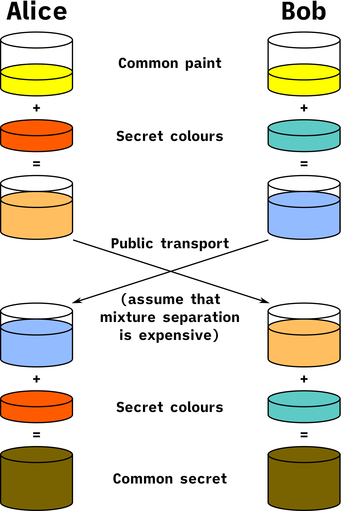

ElGamal是个啥子玩意
很早之前就听说ElGamal加密算法是一种公钥密码，但是具体实现和用途不甚了解，今天阅读了 A PUBLIC KEY CRYPTOSYSTEM AND A SIGNATURE SCHEME BASED ON DISCRETE LOGARITHMS 一文，故去了解了一下。特开此文，记录一下
省流：ElGamal是DH密钥交换的抵抗中间人攻击版本
ElGamal加密算法是一个基于DH密钥交换的非对称算法，可以定义在任何循环群上，它的安全性取决于循环群上的离散对数难题
离散对数问题指的是：
- 已知 $a,b,n$ ，计算$ a^b\mod n$ 是简单的。
- 已知 $a,(a^b\mod n),n$ ，计算 $b$ 是困难的。
Diffie-Hellman 密钥交换过程：
- Alice 和 Bob选定一个素数 $p$ ，以及它的一个原根 $g$
- Alice 选择一个密钥 $a$ ，计算 $A=g^a\mod p$ ，发给 Bob
- Bob 选择一个密钥 bb ，计算 $B=g^b\mod p$ ，发给 Alice
- Alice 计算 $s=B^a\mod p$ ，Bob 计算 $s=A^b\mod p$
这样，Alice 和 Bob 就共享了一个密钥 $s=g^{ab}\mod p$
通俗理解：在调色板上将两种颜色混合容易，而将两种颜色分开是困难的。

由于离散对数问题是一个数学困难问题，在选择了合适的 $p$ 和 $g$ 时，Diffie-Hellman 密钥交换协议被认为是 $\textcolor{red}{窃听安全}$ 的。攻击者 Eve 在已知 $p, g, (g^a\mod p), (g^b\mod p)$ 的情况下，难以计算出 $s=g^{ab}\mod p$
$\textcolor{red}{缺陷:无法抵抗中间人攻击}$
DH 本身没有提供任何身份认证，因此容易遭受中间人攻击：
- 中间人 Eve 假装自己是 Bob 与 Alice 通信 $s_1=g^{ac}\mod p$
- 中间人 Eve 假装自己是 Alice 与 Bob 通信 $s_2=g^{bc}\mod p$
- Eve 将 Alice 发来的消息用 $s_1$ 解密，使用 $s_2$ 加密，发送给 Bob
- Eve 将 Bob 发来的消息用 $s_2$ 解密，使用 $s_1$ 加密，发送给 Alice
- Alice 和 Bob 对此一无所知，还无知地以为在与对方通信
需要一种能验证通信双方身份的机制 (如签名) 来防止这类攻击
ElGamal 加密算法：
本质上就是用 DH 获得一个密钥，然后用它加解密消息。
密钥生成：
- Alice 和 Bob 选定一个素数 $p$ ，以及它的一个原根 $g$
- Alice 选择一个私钥 $X_A$ ，计算公钥 $Y_A=g^{X_A}\mod p$，公开
- Bob 选择一个私钥 $X_B$ ，计算公钥 $Y_B=g^{X_B}\mod p$ ，公开
假如 Bob 要给 Alice 发送一条消息 $m$ ，加密过程：
- Bob 计算密钥 $k=(Y_A)^{XB}\mod p=g^{X_AX_B}\mod p$
- Bob 发送 $c_1=Y_B, c_2=k\cdot m\mod p$
Alice 收到密文，解密过程：
- Alice 计算密钥 $k=(c_1)^{X_A}\mod p=(Y_B)^{X_A}\mod p=g^{X_AY_A}\mod p$
- Alice 解密消息 $m=(c_2\cdot k^{−1})\mod p$
实现代码：
1 | from Crypto.Util.number import * |
本博客所有文章除特别声明外，均采用 CC BY-NC-SA 4.0 许可协议。转载请注明来源 coperlm's Blog！
相关推荐
.gif)
2025-04-10
Beaver三元组用于乘法共享
Beaver 三元组（Beaver triples）是安全多方计算（MPC）中一个超级聪明、实用的技巧，用来安全地做乘法 通俗类比：就好像你和朋友要乘两个私密数字，但你们提前准备了一个万能“乘法模板”，可以安全又正确地偷偷算出结果。 Motivation在安全多方计算里： 加法很容易做：每个人把自己数据碎片加一下就行。 但乘法就麻烦了，因为： 两个秘密数的乘积不能直接从碎片算 又不能暴露真实数值 所以需要巧妙地”绕过去“ Beaver 三元组应运而生 DefinationBeaver 三元组表示为： (a, b, c) \quad \text{where} \quad c = a \cdot b 所有参与方各自拿到这些数的“碎片”，但不知道完整的值。 它跟我们真正要计算的 $x \cdot y$ 没有关系，只是一个通用的乘法工具。 Algorithm假设两位参与方想计算： x \cdot y但每人都只知道自己的秘密（$x$ 或 $y$），又不想泄露给别人。 步骤如下： 每人拿到 $x$ 和 $y$ 的秘密共享，还有一个 Beaver 三元组 $(a,...
.gif)
2024-09-07
Chameleon Hashing and Signatures阅读笔记
文献简介标题：Chameleon Hash and Signatures 作者：Hugo Krawczyk , Tal Rabin 期刊：无 年份：1998 重要程度：4 摘要 引入变色龙签名，提供不可抵赖签名（和常规数字签名一样） 不允许接收方在未经允许的情况下向第三方披露明文（和不可抵赖签名相关，但是算法简单和高效实现） 本质上不交互，不涉及零知识证明的设计和复杂性（传统不可抵赖签名基于零知识证明）。哈希函数的产生通过标准的hash then sign 此哈希函数...
.gif)
2025-05-19
CS2025摘要小结
本文对第九届网络空间安全国际研讨会的分享知识进行小结 相关链接：会前准备 会后游记 拍照备份 会议议程 主要笔者学习内容图像篡改定位模型对抗Motivation：AI兴起，虚假图像合成的成本大幅降低。本报告旨在检测篡改部位 Solution：使用深度网络，训练模型。有效检测篡改 新的攻击方案：给照片加噪音，人眼看不出区别，但使用原有检测方案 难以检测篡改 总结：安全领域，对抗是永恒的；AI的产生增加了对抗，也增加了弱点；在研究中，应当攻击方白盒，防守方黑盒 态势感知Motivation：国内网民众多，且信息多模态难以处理。传统处理算法的时间复杂度为指数级（响应速度为分钟级） Solution：利用关联信息进行优化（例如分块，关注敏感话题等），时间复杂度变为多项式级别（响应速度达到秒级） 应用：检测并控制舆情，护网等 备注：该报告的PPT做得十分优异，有待借鉴学习 安全云存储Motivation：云数据库存在被服务提供商或攻击者窥探的可能性，查询语句和数据关系可能泄露敏感信息 Solution： 面临挑战：数据关系隐私保护（如 JOIN...
.gif)
2025-01-07
IND-CCA2下的CP-ABE安全
今天阅读前置知识，搞了半天终于明白了IND-CCA2下的CP-ABE安全，记录一下 论文名称：Fine-Grained and Controlled Rewriting in Blockchains: Chameleon-Hashing Gone Attribute-Based 相关内容： 我们只看核心部分 我们大致划分为三个部分 第一部分，初始化，不再赘述 第二部分，攻击者交互阶段，攻击者$\mathcal{A}$选择任意属性集合$\mathbb{S}$进行请求，模拟器会这些请求的属性集合加入全局集合$S$，并生成与属性集合$\mathbb{S}$相对应的私钥$ssk$，将请求编号及生成的密钥记录到$Q$中 第三部分，挑战阶段，攻击者$\mathcal{A}$提供属性集合$A^$（$A^\cap S=\emptyset$），模拟器随机选择$b\in{0,1}$，使用属性集合$A^*$对应的私钥加密$m_b$，将密文$c_b$提供给$\mathcal{A}$...
.gif)
2025-03-26
PCS简要介绍
之前听师兄讲PCS（多项式承诺方案），听不懂一点，甚至有一次差点睡着（bushi 今天看Siniel，又遇到PCS了，故而通俗理解记录一下，也没时间看相关论文了~浅学一下，够用即可~~ Motivation：证明者有一个多项式 $p()$，验证者指定一个数 $z$ 来验证，通过承诺确保原多项式不会改变 这里，我们介绍 KZG。更具体的： KZG 方案是基于双线性对（bilinear pairing）和加法同态加密（homomorphic encryption）的密码学技术。它允许一个发送方承诺（commit）一个多项式，并稍后提供证明（proof），以便验证者确认多项式在某个点的值是否正确。 前置知识：双线性映射 设 $G_1,G_2$ 是两个循环群，阶为素数 $p$ 设 $e:G_1\times G_2\rightarrow G_T$，满足 $e(g^a,h^b)=e(g,h)^{ab}$ 对所有 $a,b\in\mathbb{Z}_p$ 成立，其中 $g,h$ 是群 $G_1$ 和 $G_2$ 的生成元 KGC的四个步骤：（对应图二） Setup（设置）：...
.gif)
2024-09-25
SM2椭圆曲线加密算法学习笔记
此文章用于记录笔者对于SM2椭圆曲线加密算法的学习 前置知识ElGamal离散对数密码体制 公钥密钥生成 Alice首先构造一条椭圆曲线 $E$，在曲线上选择一点 $G$ 作为生成元，$n$ 为 $G$ 的阶（且 $n$ 必须为质数)。此时构成了一个循环群 $$。 Alice选择一个私钥 $k (k < n)$，生成公钥 $Q = kG$ Alice将公钥组 $(E,Q,G)$ 发送给Bob 加密过程 Bob收到信息后，将明文编码为 $M$，$M$ 为曲线上一点，并选择一个随机数 $r$（$r < n$，$n$ 为 $G$ 的阶） Bob计算点 $Cipher_1$ 与 $Cipher_2$ 即两段密文，计算方法如下 $Cipher_1 = M + rQ\ Cipher_2 = rG$ Bob把 $Cipher_1$ 和 $Cipher_2$ 发给Alice 解密过程 Alice收到密文后，为了获得 $M$，只需要 $Cipher_1 - k · Cipher_2$，因为 $Cipher1 - k*Cipher2 = M + rQ - krG...
.gif)
.gif)
.gif)
.gif)
.gif)